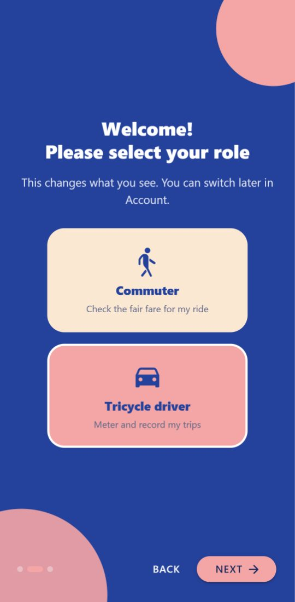
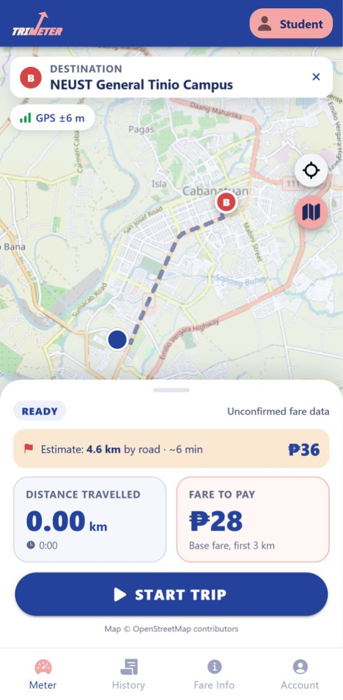
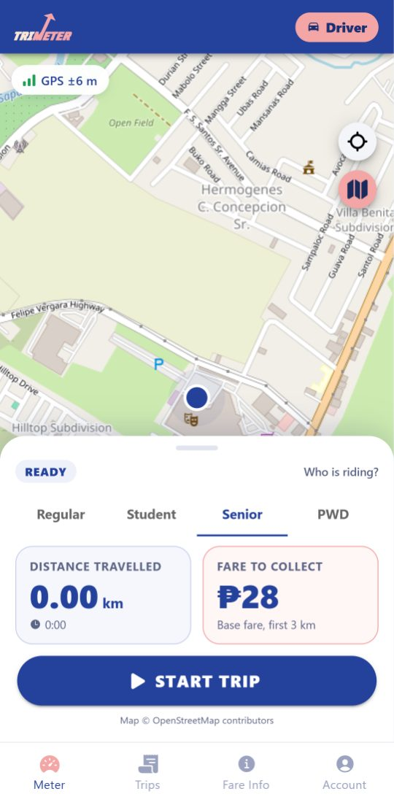
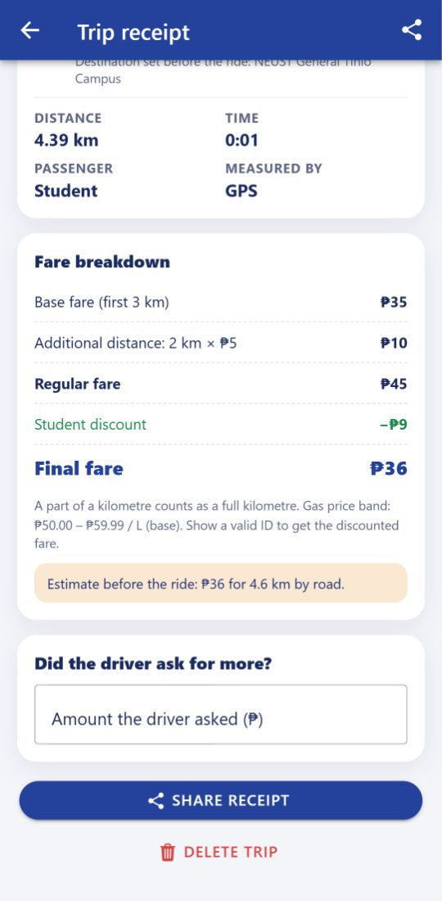
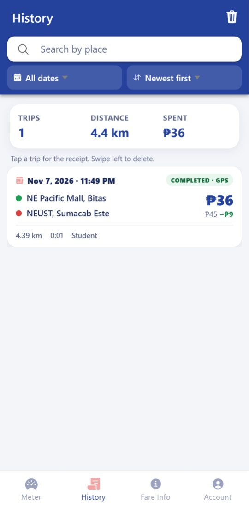
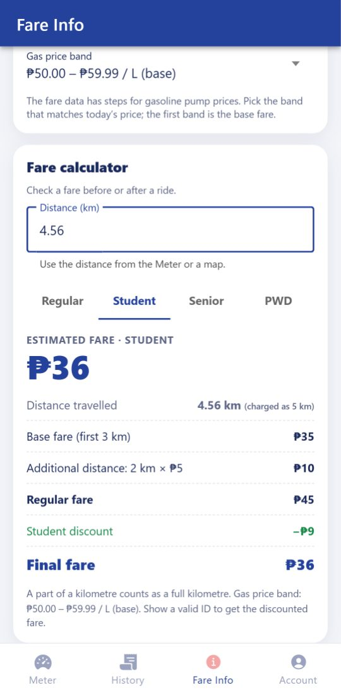

Title: TriMeter: a GPS-based tricycle fare meter for Cabanatuan City. Platform: Android (Ionic 9, Angular 22 standalone components, Capacitor 8). Members: John Mathew Ramoso, Neo Arwen De Guzman, Charles Benedict Leodones (BSIT-4C).
Problem. Cabanatuan City is known as the “Tricycle Capital of the Philippines”, and thousands of commuters ride tricycles every day. The city has an official fare matrix, but fares in practice are inconsistent: TODAs apply their own rates, drivers estimate by feel, and studies describe overcharging as rampant, with drivers charging up to 300% more than the prescribed rates. Passengers, especially students, seniors, PWDs and visitors, have no easy way to check the fair fare.
Intended users. Primary: commuters (students, workers, seniors, PWDs, tourists). Secondary: tricycle drivers, who gain a neutral reference that prevents disputes.
Proposed solution. A mobile app that measures the real distance of a ride with the phone's GPS and applies the city fare matrix live, then gives a receipt with a fare breakdown and an overcharge check. The group's original proposal also included accounts, ID-verified discounts, multiple languages, real-time gas prices, driver QR pairing and an LGU dashboard. These were set aside as future improvements to keep the scope realistic for a two-week project.

Role selection
Commuter meter with fare preview
Driver meter
Receipt and overcharge check
History with search and filters
Fare calculator
The project was created with the standard Ionic workflow:
ionic start trimeter-app blank --type=angular-standalone --capacitor, then every feature was
generated with ionic generate, so each has its own TypeScript, HTML, SCSS and test file. The app has
8 pages, 4 reusable components (map, fare breakdown, place search, fare calculator), 9 services, 1 route guard, 2
pipes and 3 model files. Pages only display data; the work is done in services. The Android project was added with
ionic capacitor add android.
services/location.ts): watchPosition with high accuracy (about one
fix every 2 s on Android). Each fix passes judgeFix(), which rejects fixes less accurate than 35 m,
movements under 5 m (jitter while waiting) and jumps faster than 30 m/s. Accepted fixes extend the route, and
the distance is summed with the haversine formula. Results are Angular signals, so the UI updates automatically.
The Screen Wake Lock API keeps the screen on during a trip. Before the first permission prompt the app explains
why it needs location, and it tracks only between Start Trip and End Trip.
services/feedback.ts): a light tap when the fare increases, and stronger taps at
the start and end of a trip.
components/trip-map).
services/fare.ts is a pure function. The base fare covers the first 3 km, and each succeeding
kilometre adds the per-km rate, with a part of a km charged as a full km (Math.ceil). The distance is
rounded to 10 m first, so GPS noise (e.g. 3.004 km) is not billed as an extra km. Students, seniors and PWDs use
the discounted column. Bundled rates follow City Ordinance No. 050-2026 as compiled by the community
BetterCabanatuan project: ₱35 / ₱28 for the first 3 km and ₱5 / ₱4 per succeeding km, with gasoline-price bands.
services/fare-matrix.ts): uses the inject(HttpClient) /
subscribe({ next, error }) pattern from class to load the fare matrix JSON. If the online copy
fails, the app uses the copy saved in Preferences, then the copy bundled in assets/. Fare changes
can therefore reach users without a new APK. GET requests also call OpenStreetMap Nominatim (place names) and
OSRM (road distance). All endpoints are public and need no API keys.
services/trip-storage.ts): Capacitor Preferences stores the trip history as JSON
with create (add), read (load/get), update (update: what the
driver asked) and delete (remove/clear). The local profile (role, name, passenger
type, gas band) is stored the same way; there is no server account. History search, date filter and sorting are
a pure function (services/trip-query.ts) so they are unit-tested.
Automated tests: 73 unit tests (Vitest) for the fare rules, receipt breakdown, GPS filter, history search,
calculator validation, settings, roles and pages, and 8 end-to-end tests (Playwright, Chrome). The
end-to-end tests replay a real 4.56 km road route (NE Pacific Mall → NEUST, from OSRM) as GPS fixes, with the
online services mocked so results are repeatable. All automated tests pass, and ng lint is clean.
| Feature / task tested | Expected result | Actual result | Status |
|---|---|---|---|
| Role selection (commuter / driver) | Role saved; tabs and Meter change | As expected | Pass |
| GPS meter, 4.56 km route, regular | ₱45 (₱35 + 2 km × ₱5) | ₱45 | Pass |
| Driver, student passenger, same route | ₱36; receipt shows ₱45 − ₱9 discount | ₱36, as expected | Pass |
| Destination preview (commuter) | 4.6 km by road, ₱45 before the ride | As expected | Pass |
| GPS jitter while standing still (30 fixes) | 0.00 km added | 0.00 km | Pass |
| End a trip with no distance | Not saved; “Discard trip” offered | As expected | Pass |
| Save, reload, search and delete a trip | Kept after reload; search filters; delete confirmed | As expected | Pass |
| Overcharge check (₱90 asked vs ₱45) | “Overcharged by ₱45 (100%)” | As expected | Pass |
| Calculator: 4.56 km student; invalid input | ₱36; error message for 0 or text | As expected | Pass |
| Offline place search / road distance | Clear message; straight-line fallback | As expected (unit test) | Pass |
| Real ride on an Android phone (APK) | Distance and fare update live | [fill in after the device test] | To verify |
inject() after await. All were found by testing and
fixed.
Tool: Claude Code (Anthropic), an AI coding assistant used in VS Code. How it assisted: scaffolding
the project with the Ionic CLI, writing and refactoring the services, pages and tests, implementing the group’s
improvement brief (roles, fare calculator, history filters, error handling), researching and fact-checking the
fare data sources, and producing the Remotion presentation video and script. What the group did: reviewed
the generated code, ran the unit and end-to-end tests, tested the APK on an Android phone, and fixed the issues
found. The group can explain the main code (location.ts, fare.ts,
fare-matrix.ts, trip-storage.ts). No passwords, private keys or personal data were used
in prompts or code.